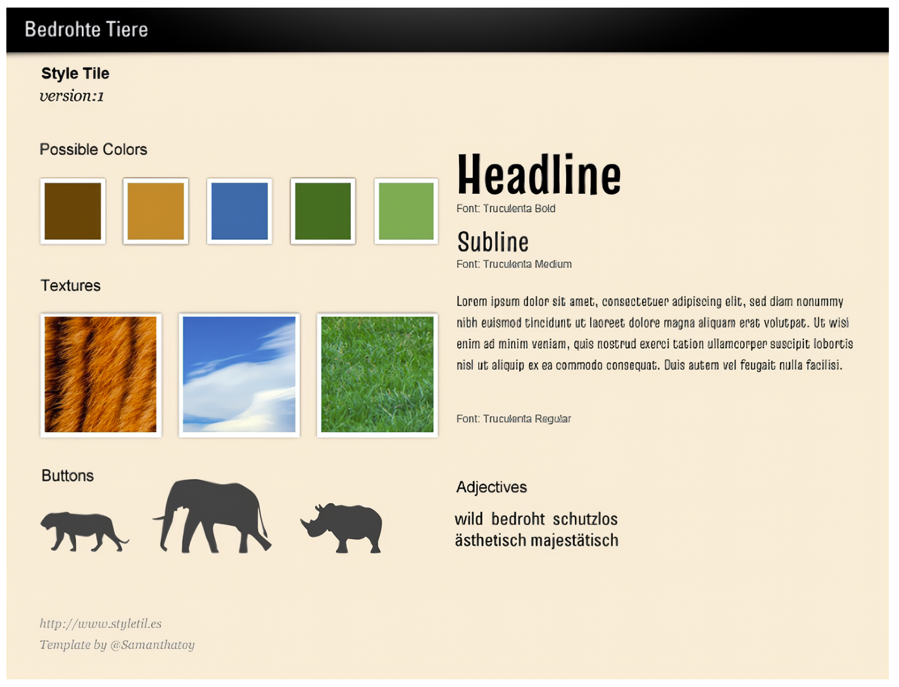

Moodboard / Style Tiles

Visual Design - Von Moodboards zu Style Tiles
Ein Moodboard ist ein visuelles Sammelbecken, auf dem alles, was zum Projekt passen könnte, gesammelt und dargestellt wird. Das können Fotos, Farbmuster, Schriftarten, Layoutskizzen, Grafiken, Slogans und Logos sein. Sein Ziel ist es, eine passende Stimmung oder Atmosphäre zu erfassen, besonders wichtig, wenn Sie möglicherweise nicht Teil der Zielgruppe des Projekts sind. Zum Beispiel könnte eine vegane Webdesignerin beauftragt werden, die Website für einen Fleischfabrikanten zu gestalten.
Der nächste Schritt nach der Erfassung dieser Eindrücke ist die Erstellung eines Style Tiles, was so etwas wie stilistische Kacheln bedeutet. Hier werden Farben, Schriftarten, Buttons usw. definiert und digital gestaltet. Dieses Style Tile kann dann dem Kunden präsentiert werden, um mögliche Anpassungswünsche zu besprechen.
Style Tiles werden üblicherweise mit Grafiksoftware wie Adobe Illustrator oder Bildbearbeitungsprogrammen wie Adobe Photoshop erstellt. Kostenlose Vorlagen für die Erstellung von Style Tiles mit Photoshop sind beispielsweise auf styletil.es verfügbar.
In Style Tiles werden die Schriften, Farben und Buttons definiert, um dem Kunden frühzeitig einen Einblick in die geplante Gestaltung zu ermöglichen und etwaige Änderungswünsche zu berücksichtigen.
